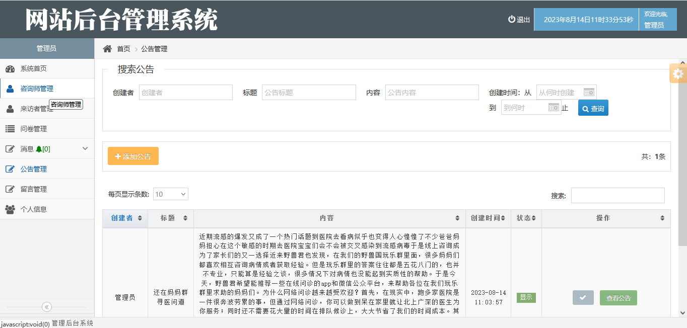

心理咨询系统使用原生的 java 技术开发，通过 sevlet+jsp 来实现前后端数据交互，通过 jdbc 进行数据存储。系统分为三种角色，分别是管理员，咨询师和访客。
管理员功能如下：
咨询师功能如下：
访客功能如下：
用 idea 打开项目
在 idea 中配置 jdk 环境
配置 tomcat8.0
新建数据库，导入数据库文件
在 pool.properties 文件中将数据库账号密码改成自己本地的
启动运行
管理员访问地址：http://localhost:8080/admin/login.jsp, 账号密码 admin/123456
咨询师访问地址：http://localhost:8080/doctor/login.jsp，账号密码 18888888888/123456
访客访问地址：http://localhost:8080/client/login.jsp，账号面膜 18899888899/123456
